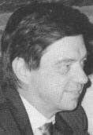
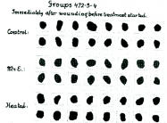
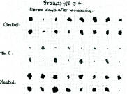
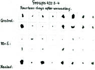
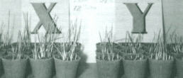
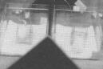
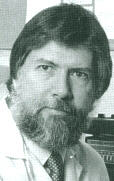

<!doctype html public "-//w3c//dtd html 4.0 transitional//en">
<html>
<head><meta name="viewport" content="height=device-height,width=device-width">
   <meta http-equiv="Content-Type" content="text/html; charset=iso-8859-1">
   <meta name="Generator" content="Microsoft Word 97">
   <meta name="GENERATOR" content="Mozilla/4.73 [en] (WinNT; I) [Netscape]">
   <meta name="Author" content="Jeffrey Mishlove">
   <title>The Roots of Consciousness: Science, Psionics -- Practical Application of Psychic Awareness</title>

<!-- google-analytics.com  START  (aync)-->
<script type="text/javascript">

  var _gaq = _gaq || [];
  _gaq.push(['_setAccount', 'UA-15825841-1']);
  _gaq.push(['_trackPageview']);

  (function() {
    var ga = document.createElement('script'); ga.type = 'text/javascript'; ga.async = true;
    ga.src = ('https:' == document.location.protocol ? 'https://ssl' : 'http://www') + '.google-analytics.com/ga.js';
    var s = document.getElementsByTagName('script')[0]; s.parentNode.insertBefore(ga, s);
  })();

</script>
<!-- google-analytics.com  END  -->

<!-- Histats.com  START  (aync)-->
<script type="text/javascript">var _Hasync= _Hasync|| [];
_Hasync.push(['Histats.start', '1,1087503,4,0,150,30,00000000']);
_Hasync.push(['Histats.fasi', '1']);
_Hasync.push(['Histats.track_hits', '']);
(function() {
    var hs = document.createElement('script'); hs.type = 'text/javascript'; hs.async = true;
    hs.src = ('http://s10.histats.com/js15_as.js');
    (document.getElementsByTagName('head')[0] || document.getElementsByTagName('body')[0]).appendChild(hs);
  })();</script>
<noscript><a href="http://www.histats.com" target="_blank"></a></noscript>
<!-- Histats.com  END  -->

</head>
<body>
&nbsp;
<center><table BORDER=0 COLS=1 WIDTH="600" >
<tr>
<td>
<center><font face="Arial,Helvetica"><font size=+2>Psionics -- Practical
Application of Psychic Awareness</font></font></center>

<p><font face="Arial,Helvetica">Even for individuals who accept the reality
of psi ability, the question of its practical applications remains controversial.
Can these powers be used for detrimental purposes? What are the limits
of psychic ability? Can psychic abilities be brought under institutional
or government control? Are we opening another Pandora's Box?</font>
<p><font face="Arial,Helvetica">It is difficult to answer these questions
based on the scant amount of solid, scientific evidence we have so far
accumulated. Certainly more inferences can be obtained by drawing upon
the history, the literature, and the folk-wisdom of psi.</font>
<p><font face="Arial,Helvetica">Many fields of human endeavor today include
both a scientific/scholarly branch and a branch devoted to practical application.
Examples include education, physics, psychology, music, drama, agriculture,
sociology, political science, genetics, chemistry, rhetoric and athletics.
In fact, in each case, the practical applications of a discipline preceded
the science and scholarship. Certainly the same is also true of psi research.
Folklore and history suggest that the practical application of psi abilities
is a major interest of shamanism -- one of the world's oldest professions.
I sometimes use the term "psionics," taken from the science fiction literature,
to describe the applied branch of psi exploration.</font>
<p><font face="Arial,Helvetica">Some psi researchers and other scientists
have been known to argue that there really is no proper applied branch
of psi exploration.,, Some say that psi cannot be applied until its existence
has been proven to the scientific community. Others, who accept the scientific
proofs of psi's existence, argue that it cannot be applied because experimental
tests have shown it to be too weak and unreliable. Still others argue that,
even if psi is not always reliable, it cannot compete in effectiveness
with the technology of today's modern world. Furthermore, in a real-life
setting, there is no way to properly distinguish genuine psi functioning
from other possible interpretations. If psi exists, its practical application
in a consistent, reliable manner still awaits many future developments.
Nevertheless there are some potentially promising beginnings.</font>
<br>&nbsp;
<p><b><font face="Arial,Helvetica">Casino Gambling Simulation&nbsp;</font></b>
<p><font face="Arial,Helvetica">Researchers attempting to apply ESP to
casino gambling have hoped that eventually they might be able to use psi-missing
to their advantage. In a series of studies reported by Robert Brie and
Walter Tyminski several statistical techniques were used to apply ESP choices
to gaming. One of these was the majority-vote technique.</font>
<p><font face="Arial,Helvetica">Suppose, for example, we know a given subject
can consistently score 52% on an ESP test where chance expectation is 50%.
Although such scoring can be extremely significant over several thousand
trials, there are many situations where one could not afford to be wrong
48% of the time. In this situation, scores can be strengthened, although
the procedure is somewhat slower. Suppose we make ten guesses of each target
instead of one; then we determine our final guess using the majority vote
of those ten guesses. This is essentially the same repetition principle
a radio-communications engineer uses when a signal is obscured by noise.
If we made a thousand guesses at the target, with 52% ESP chances are very
high a majority-vote would yield the correct answer-unless one's ESP were
working in a negative direction.</font>
<p><font face="Arial,Helvetica">Working with actual casino games as their
targets, Brier and Tyminski utilized a majority-vote technique so bets
were determined by the vote of five different guesses. Furthermore, they
divided the gambling situation into test-runs and play- runs. The guesses
were made well in advance of the betting situation and were recorded carefully
on scoring sheets. During the test-runs of twenty-five bets, the experimenters
calculated whether the subject was psi-hitting or psi-missing. If the subject
was showing positive psi, the play-run bets were predicted according to
the regular majority vote. However, if negative-psi was indicated, the
play-run bets were then predicted in the opposite direction of the majority
vote. If scores in the test-run were close to chance, no attempt was made
to predict the playrun bets.</font>
<p><font face="Arial,Helvetica">This technique proved remarkably successful,
from an experimental point of view, in the six test situations reported.
Its promise of psi applications seems very encouraging. However, readers
are not encouraged to rush out and try to apply this technique right away.
The statistical procedures can be quite complex, particularly when one
takes into account position effects and scoring declines. Attention must
also be paid to creating a psychological atmosphere for the subject conducive
to ESP testing.&nbsp;</font>
<p><font face="Arial,Helvetica">James Carpenter's experiment resulted in
the successful identification of the binary (Morse) code equivalent to
the word "PEACE." Later, Puthoff et al. reported encouraging results based
on a more efficient statistical averaging procedure.</font>
<p><font face="Arial,Helvetica">In one series of studies, Robert Mihalsky
and E. Douglas Dean looked at company presidents who had doubled their
company's profits during the last five years. They found these individuals
scored much higher in the precognitive tests than other executives. In
fact, the ESP test seemed to be a much better indicator of executive success
than other personality measurements.&nbsp;</font>
<p><font face="Arial,Helvetica">Given the challenge of applying remote
viewing protocols to practical ends, Harold Puthoff worked with a group
of parents hoping to raise money for an alternative school for their children.</font>
<center>
<p>
<br><b><font face="Arial,Helvetica"><font size=-1>Harold E. Puthoff</font></font></b></center>

<p><font face="Arial,Helvetica">They undertook a 30-trial series in which
remote viewing was used to predict the daily outcomes of a commodities
market variable (which was then successfully traded in the market).</font>
<p><font face="Arial,Helvetica">The technique employed was an ARV (associational
remote viewing) procedure. In this method several remote viewers were asked
to describe (free-response) a target object to be shown them at the close
of the following day, the selection of that object to be determined by
that day's market activity (e.g., if market up, an apple; if down, a pencil).
The task of the remote viewing judge is to determine from the viewers'transcripts
the likely feedback object, and hence (in advance) the associated market
movement. The sequence in detail was: (a) remote viewers generate transcripts;
(b) without reference to the transcripts, two objects are selected and
labeled (by use of a random number generator) market-up, market-down objects;
(c) a judge determines a consensus vote as to which of the two objects
is being described (and the associated market-movement prediction is passed
on to a trader); (d) at the close of the following market day the actual
"ground-truth" market-movement object is shown the viewers for feedback,
closing the loop.</font>
<p><font face="Arial,Helvetica">Seven parents interested in raising funds
for the school volunteered as remote viewers. After an evening's instruction
on the SRI remote viewing protocols, a series was begun. The number of
remote viewing trials per person over the entire series ranged from a maximum
of 36 (six pilot, 30 market trials) to a minimum of twelve. Consensus judging
yielded a result of 21/30 (70.0%), significant at p &lt; 2.2 x 10-2, and
a series of profits/losses at about $1,000 - $2,000/trial, netting more
than $25,000 profit for the entire series.</font>
<p><font face="Arial,Helvetica">In a second series, using the same formal
method, when they were trying to make money for themselves, Puthoff and
his colleagues were unsuccessful.</font>
<br>&nbsp;
<br>&nbsp;
<br>
<center>
<p><font face="Arial,Helvetica"><font size=+2>Psi Healing</font></font></center>

<p><b><font face="Arial,Helvetica">Bernard Grad's Research at McGill University</font></b>
<p><font face="Arial,Helvetica">In 1959, a Canadian researcher, Dr. Bernard
Grad, was introduced to a Hungarian refugee named Oskar Estebany who claimed
that some form of healing energy emanated from his hands. Estebany had
been a cavalry officer in the Hungarian army before the 1956 uprising and
originally discovered his healing abilities in treating the army horses.
In a series of ingenious experiments with Estebany, Grad provided the scientific
foundation for the existence of psychic healing.</font>
<p><font face="Arial,Helvetica">His first experiments were with laboratory
mice whose backs had been deliberately wounded by carefully removing an
area of skin. The areas of these wounds were measured over an eighteen
day healing period.</font>
<center>
<p>
<p><b><font face="Arial,Helvetica"><font size=-1>Wound size in mice immediately
after removing a portion of the skin. The middle&nbsp;</font></font></b>
<br><b><font face="Arial,Helvetica"><font size=-1>two rows received psychic
healing treatment. (Courtesy Bernard Grad).</font></font></b>
<p>
<br><b><font face="Arial,Helvetica"><font size=-1>Wound size after eleven
days</font></font></b>
<p>
<br><b><font face="Arial,Helvetica"><font size=-1>Wound size after fourteen
days</font></font></b></center>

<p><font face="Arial,Helvetica">The treatment consisted of Mr. Estebany's
holding the caged mice between his hands for twenty minutes twice daily.
One control group received similar handling from medical students who did
not claim to have unusual healing ability, while the mice in another control
group simply remained in their cages without handling at all. The experiment
was carefully controlled so that the individuals who cared for the mice
and measured their wounds did not know which of the test groups they were
in. A total of 300 mice were used in one experiment, which was eventually
published after several pilot studies. This experiment showed significantly
faster wound healing in the mice treated by Mr. Estebany. It was difficult
to maintain that the mice were susceptible to the power of suggestion.
Rather the experimenters felt that there was some sort of healing emanations
coming from Estebany's hands.</font>
<p><font face="Arial,Helvetica">In his next experiment, Grad used barley
seeds which were treated with a saline solution. Sterile and sealed in
bottles under vacuum the solution was normally used for intravenous infusion
of humans. The healer merely held one sealed bottle in his hands for thirty
minutes. A control bottle of solution was not "healed." The seeds were
soaked in the solution and allowed to dry for 48 hours. Then they were
baked in an oven just long enough to injure, but not kill them. Twenty
seeds were planted in each of twenty-four pots-with identical soil, temperature,
and humidity conditions. During the test period no person knew which seeds
had been given the treated water. Estebany himself had no contact with
the barley seeds. However, after the conclusion of the experiment it was
found that those pots with seeds which had been watered from the bottles
treated by the healer had more plants growing in them and the plants were
also taller.</font>
<center>
<p>
<br><b><font face="Arial,Helvetica"><font size=-1>Plant growth affected
by psychic healing treatment (courtesy Bernard Grad)</font></font></b></center>

<p><font face="Arial,Helvetica">In a third experiment, Grad attempted to
determine if he could get effects from other subjects. In fact, he hypothesized
that if a psychic healer could cause greater plant growth, perhaps treatment
by psychiatric patients would inhibit growth. A similar experimental technique
was used with three subjects. One of these was psychiatrically normal,
the second was a hospitalized depressed neurotic, and the third a hospitalized
depressed psychotic patient. A control group of plants received no treatment
at all. The results of this experiment were very intriguing. The plants
treated with the solution held by the normal subject showed greater growth
than either the control or the depressed subjects. This effect was statistically
significant and the "normal" subject also claimed to feel some sort of
flow through his hands during the experiment. One of the depressed subjects
was so amused with the experiment that her mood picked up as soon as she
was asked to hold the bottle of saline solution. Her plants rew consistently,
but not significantly larger than the control plants. The third subject
stayed in an unhappy mood throughout the experiment. The seeds treated
from the bottle of solution which she held showed less growth than the
untreated control group. This effect was small in Grad's experiment, but
we will see that it has been confirmed by other studies.</font>
<p><font face="Arial,Helvetica">Another experiment was performed testing
the effect of healing on the rate at which thyroid goiters developed in
mice whose diet was deficient in iodine and contained thiouracil. It was
found that mice in cages held for two fifteen-minute periods each day by
the psychic Estebany developed goiters at a slower rate and recovered from
them at a faster rate than mice in the control group, which were given
the same amount of warmth as that produced by the healer's hands.</font>
<p><font face="Arial,Helvetica">Critics have faulted Grad's studies as
well as other work in the area of ostensible psychic healing for two primary
reasons. Studies did not adequately shield for the possibility of conventional
physical influences (i.e., heat and electromagnetic radiation). Also, researchers
measuring the results were often not blind as to which animals were in
the test condition and which were controls.</font>
<br>&nbsp;
<p><b><font face="Arial,Helvetica">Conceptual Replications of Grad's Research</font></b>
<p><font face="Arial,Helvetica">One experiment examined the healing effect
on wounds that were surgically administered on human subjects by a medical
doctor using a skin biopsy instrument and local anaesthetic. This procedure
created a relatively consistent wound size upon incision for all subjects.</font>
<p><font face="Arial,Helvetica">This study eliminated the influence of
suggestion and the expectation of healing, as well as the placebo effect,
by utilizing a double blind design. Neither the doctor nor the laboratory
technician knew whether any particular subject was in the experimental
or control group. In fact, none of these individuals even were informed,
until after the data had been collected, that this experiment was a test
of psychic healing. A special laboratory had been constructed which kept
the healing practitioner separated from all other experimental personnel,
including the subjects themselves, who simply placed their arms through
a hole in the wall of the laboratory room. They were told that the study
was designed to measure electrical conductivity of the body. The noncontact
healing treatments lasted for five minutes each day, for sixteen days.
The healing practitioner was located behind the wall through which the
subjects placed their arms. Circumstances were exactly the same for both
treatment and control groups with the exception that the healing practitioner
was not present during the sessions with control subjects.</font>
<p><font face="Arial,Helvetica">After sixteen days, thirteen of the 23
"treatment" group subjects were completely healed -- whereas none of the
"nontreatment" group subjects were completely healed on this day. Statistical
differences in wound size between the healing and control group were significant
when measurements were made on both the eighth and sixteenth days after
the original wounds.</font>
<p><font face="Arial,Helvetica">After the statistical analysis had been
completed, the experimenter interviewed the subjects, the healing practitioner,
the medical doctor and the laboratory technician independently. These interviews
confirmed that almost all essential experimental protocols were maintained
throughout the study.</font>
<p><font face="Arial,Helvetica">Although this is one of the best healing
studies on record, it may be faulted on several grounds. The experimental
protocols were violated when the healing practitioner was unable to schedule
afternoon sessions. Thus all of the experimental subjects were scheduled
in the morning, while control subjects were scheduled in the afternoon.
While it is unlikely that the time of treatment, in itself, would have
produced a differential healing effect, a significant difference still
exists insofar as there was no human being near the arm of the control
subjects during the supposed treatment period. Thus, there was no effective
experimental control for effects such as electromagnetic radiation that
may have emanated from the healing practitioner. While one may claim that
a non-contact therapeutic touch (NCTT) effect was observed, there is no
reason to assume that this was a psychhokinetic effect as opposed to one
that might be explainable in terms of conventional physical interactions.</font>
<p><font face="Arial,Helvetica">Carroll B. Nash, who directed the Parapsychology
Laboratory at St. Joseph's College in Philadelphia, performed an experiment
with 19 psychotics in which each held a bottle of glucose solution. When
poured on suspensions of yeast cells the solutions were found to have a
slight inhibiting effect on the growth of this organism as compared with
controls in which the glucose had not been subjected to treatment.</font>
<p><font face="Arial,Helvetica">The demonstrated existence of effects caused
by the laying on of hands still left unanswered many questions regarding
the mechanisms of this phenomenon. What is it about the hands of a healer
that can affect wound healing or plant growth?</font>
<p><font face="Arial,Helvetica">This question was on the mind of the biochemist,
Sister Justa M. Smith, who, in 1970, invited Mr. Estebany to her laboratory
at Rosary Hill College in Buffalo, New York. Sister Smith's research had
focused on enzymes-large protein molecules which act as catalysts, speeding
up biochemical reactions such as those associated with wound healing and
growth of tissue. Her research had shown that the reactivity of enzymes,
which were treated by a strong magnetic field, was increased; and she wondered
if Estebany's hands might imitate this effect.</font>
<p><font face="Arial,Helvetica">In her laboratory, Estebany held sealed
test tubes of enzymes in his hands while her assistants tested their reactivity
every fifteen minutes, using an infrared spectrophotometer. They found
that the enzymes behaved as if they had been exposed to a magnetic field
of 13,000 gauss. This is a very strong field when one considers that the
magnetic field of the earth is only about one-half of a gauss. Further
testing with a magnetometer, however, revealed that there was no unusual
magnetic field around Estebany's hands.</font>
<p><font face="Arial,Helvetica">In another experiment with Mr. Estebany,
Dolores
Krieger, a nursing instructor at New York University, measured the hemoglobin
levels of 16 patients who were treated with laying-on-of-hands for fifteen
minutes three times daily. Over a six day period, the patients showed an
average increase of 1.2 gm. of hemoglobin per 100 cc. of blood. There was
no increase in the level of patients who did not receive the healing treatment.</font>
<p><font face="Arial,Helvetica">Further testing of the water treated by
Mr. Estebany showed distinct spectrophotometric differences from untreated
water. Bernard Grad passed infra-red light through both experimental and
control saline solutions and revealed a difference in percent transmission
between 2,800 and 3,000 millimicrons. But he called it an error since the
region was outside the instrument's specifications.&nbsp;</font>
<p><font face="Arial,Helvetica">Douglas Dean, as reported in his 1983 doctoral
dissertation research at the Saybrook Institute, replicated this observation
on an instrument designed for that particular region of infra-red.&nbsp;</font>
<p><font face="Arial,Helvetica">Dean used a double-blind study and tested
the healer, Olga Worrall, holding distilled water bottles for 5, 15, and
30 minutes. Larger 2,700 millimicron infra-red bands appeared with longer
time of holding. Dean also replicated these results in London at Kings
College with healer Rose Gladden.</font>
<p><font face="Arial,Helvetica">Hand-held and imagining "higher consciousness"
gave a large band, whereas imagining "magnetizing" gave control values.
Boiling the healer-treated water to steam and condensing it back to water
seemed not to boil the healer effect out.&nbsp;</font>
<p><font face="Arial,Helvetica">In a study conducted by Stephan Schwartz,
et al. of the Mobius Society in Los Angeles, fourteen practitioners were
tested -- each of whom employed a personal variation of the Laying-on-of-Hands/Therapeutic
Touch processes. Through standard techniques of infrared spectrophotometry,
sterile water samples in randomly selected vials evidence alteration of
infrared (IR) spectra after being proximate to the palms of the hands of
practitioners. A variation in the spectra of all treated samples compared
with all control samples was observed in the 2.5 - 3.0 micrometer range,
as predicted.</font>
<p><font face="Arial,Helvetica">Environmental factors including temperature,
barometric pressure, and variations dependent on sampling order, do not
appear to explain the the observed infra-red spectrum alteration.</font>
<p><font face="Arial,Helvetica">A series of experiments in psychic healing
was conducted by Graham and Anita Watkins at the Foundation for Research
on the Nature of Man in Durham, North Carolina, who attempted to find out
whether psychics could be able to cause mice to awaken more quickly from
ether anesthesia than would normally be expected. Altogether thirteen different
subjects were used for this experiment. Three of these subjects were members
of the laboratory staff who claimed no special healing ability or significant
psychokinetic ability in general. The remaining ten subjects had either
claimed to have healing abilities or had performed well on a psychokinetic
test under controlled laboratory conditions. In some of the experiments,
the subjects were in the same room with the mice they were attempting to
revive. In another experiment, the mice were in one room and the subject
was in an adjoining room viewing them through a one way glass.</font>
<center>
<p>
<br><b><font face="Arial,Helvetica"><font size=-1>Subject's view of the
mice through a one-way glass. Either the right or left wide was the target,
the other mouse serving as a control. (Courtesy Graham Watkins)</font></font></b></center>

<p><font face="Arial,Helvetica">The results of this experiment were highly
significant overall. Thirty-two runs were performed with twenty-four trials
in each run. In each trial the subject was presented a mouse to revive,
and a &amp;#0;ontrol mouse which was simultaneously anesthetized. The control
mice averaged 30.43 seconds and the experimentals 25.36 seconds to revive
from the ether. The probability that this result was due to chance is less
than one in a million. Only one of the talented subjects scored at a chance
level as did all three of the laboratory staff. The nine remaining talented
subjects scored extremely well.</font>
<p><font face="Arial,Helvetica">One unusual finding of this experiment
was that the subjects failed to produce a significant effect when they
were assigned a random target series instead of using one target location
(right or left) throughout a half run of twelve trials. This apparent failure
could be explained, however, if the psychic effect which was causing the
accelerated waking of the mice did not immediately dissipate when the subject
ceased to concentrate, but rather lingered on for a certain period of time.
This was suggested to the experimenters by the fact that when the subjects
were asked to change target sides at the end of a half run, approximately
thirty minutes was required between halves to insure a successful second
half. This was seen in a number of preliminary runs in which this interval
was varied between five minutes and an hour.</font>
<p><font face="Arial,Helvetica">To test this hypothesis, the Watkins conducted
another experiment in which the subject was asked to leave the building
upon completing the first half run, and the second half began immediately
with a pair of mice being placed on the table as though the healer were
still present in the adjoining room. In this experiment, the mice on the
side of the table that had previously been the target side continued to
revive faster -- even though no healer was concentrating on them. This
"linger effect" was found to be at least as reliable as the main healing
effect.</font>
<p><font face="Arial,Helvetica">A replication of this study was conducted
by Roger Wells and Judith Klein using four "healers." Eight experiments,
each consisting of 24 trials, were conducted. Seven of the eight were in
the expected direction, one being independently significant with a chance
probability level less than one in a hundred. There was an average difference
of 5.52 seconds between the time the experimental mice awoke and the time
the control mice awoke. Of the total 192 trials, 110 were hits.</font>
<br>&nbsp;
<p><b><font face="Arial,Helvetica">The Transpersonal Imagery Effect</font></b>
<p><font face="Arial,Helvetica">Researchers in psychoneuroimmunology have
determined that individuals can use mental imagery to influence their own
physiological states. This process is sometimes called preverbal imagery.
William Braud and Marilyn Schlitz, of the Mind Science Foundation in San
Antonio, Texas, recently reported on a series of studies attempting to
assess whether one can use mental imagery to influence the physiological
state of another person at a distant location.</font>
<br>&nbsp;
<table BORDER=0 COLS=2 WIDTH="100%" >
<tr>
<td>
<center>
<br><b><font face="Arial,Helvetica"><font size=-1>William Braud</font></font></b></center>
</td>

<td>
<center>
<br><b><font face="Arial,Helvetica"><font size=-1>Marilyn Schlitz</font></font></b>
<br><font face="Arial,Helvetica"><font size=-2>(courtesy <a href="http://www.thinkingallowed.com/" >Thinking
Allowed Productions</a>)</font></font></center>
</td>
</tr>
</table>

<p><font face="Arial,Helvetica">This process is referred to as transpersonal
imagery, a concept which, as defined by psychologist Jean Achterberg, "embodies
the assumption that information can be transmitted from the consciousness
of one person to the physical substrate of others."&nbsp;</font>
<p><font face="Arial,Helvetica">Braud and Schlitz developed an objective,
quantitative methodology for the study of transpersonal imagery within
the framework of experimental psychology. In a typical experiment, Person
A (the influencer) was instructed to use mental imagery in order to induce
physiological changes in Person B (the subject), who was isolated in a
distant room. The expected physiological effect was assessed by measuring
the spontaneous electrical skin resistance responses of person B. During
some experimental sessions, Person A was instructed to produce imagery,
during 30-second recording "epochs," for increased relaxation in Person
B. In other sessions, the mental imagery from Person A was directed toward
arousal. At other specified moments in time, according to a random pattern,
person A was asked to refrain from generating any relevant imagery. Some
experimental sessions included sequences with both calming and arousing
influence, as well as control periods.</font>
<p><font face="Arial,Helvetica">The distance (20 meters or more) between
the two rooms used in an experiment, and the presence of several intervening
closed doors and corridors, isolated the participants from possible sensory
interaction. Additionally, verbalization of any information regarding the
imagery/nonimagery schedule by the influencer or the experimenter was not
allowed during the experimental sessions. There were no active microphones
in either room through which participants could communicate. The headphones
through which the participants in the two rooms received required auditory
information were attached to independent electrical circuits so that possible
"crosstalk" between two sets of headphones was eliminated (i.e., it was
impossible for one person's headphone to function as a microphone for the
other person's headset).</font>
<p><font face="Arial,Helvetica">Throughout an experimental session, the
subject sat in a comfortable airchair in a dimly illuminated, closed room.
The subject was instructed to make no deliberate effort to relax or become
more active, but rather to remain in as ordinary a condition as possible
and to be open to and accepting of a possible influence from the distant
influencer whom he or she had already met. The subject remained unaware
of the number, timing or scheduling of the various influence attempts,
and was instructed not to try to guess consciously when influence attempts
might be made. The subject was asked to allow his or her thought processes
to be as variable or random as possible and to simply observe the various
thoughts, images, sensations, and feelings that came to mind without attempting
to control, force, or cling to any of them.</font>
<p><font face="Arial,Helvetica">The influencer sat in a comfortable chair
in front of a polygraph in another closed room. The polygraph provided
a graphic analog readout of the concurrent electrodermal activity of the
distant subject. Each change in imagery was signaled to the influencer
by an auditory signal that could not be heard by the distant subject. Immediately
before each signal, the experimenter exposed a card to the influencer containing
an instruction for the upcoming recording "epoch." During control periods,
the influencer attempted not to think about the subject or about the experiment,
and to think of other matters. During influence periods, the influencer
used the following strategies (either alone or in combination) in an attempt
to influence the somatic activity of the distant subject.</font>
<p><font face="Arial,Helvetica">1. The influencer used imagery and self-regulation
techniques in order to induce the intended condition in himself or herself,
and imagined a corresponding change in the distant subject.&nbsp;</font>
<p><font face="Arial,Helvetica">2. The influencer imagined the other person
in appropriate relaxing or activating settings.</font>
<p><font face="Arial,Helvetica">3. The influencer imaged the desired outcomes
of the polygraph pen tracings -- i.e., imagined few and small pen deflections
for calming periods and many and large deflection for activation periods.</font>
<p><font face="Arial,Helvetica">There were rest periods, ranging in duration
from 15 seconds to 2 minutes in the various experiments, between the 30-second
recording epochs. During those periods, the influencer was able to rest
and to prepare for the upcoming epoch.</font>
<p><font face="Arial,Helvetica">In order to eliminate the possible influence
of common internal rhythms and to remove the possibility that the influencer
and the subject just happened to respond at whim in the same manner and
at the same times, it was necessary to formally assign to the influencer
specific times for engaging in imagery; such assignments had to be truly
random and, of course, could not be known to the subject (lest the subject
self-regulate his or her own physiology on the basis of such knowledge,
in order to confirm the expectations of the experimenter).</font>
<p><font face="Arial,Helvetica">Evaluation of whether the influencer's
imagery influenced the subject's somatic activity was carried out on a
session-by-session basis, and involved a determination of the proportion
of somatic activity in the prescribed direction which occurred during the
influence periods, relative to its occurrence during control periods.</font>
<p><font face="Arial,Helvetica">The experimental design guaranteed that
the effect could not be attributed to conventional sensorimotor cues, common
external stimuli, common internal rhythms, or chance coincidence. Polygraph
readings were scored on a blind basis and were eventually computer-automated
in order to prevent recording errors or "motivated misreadings" of the
records.</font>
<p><font face="Arial,Helvetica">The subjects were not told when or how
many influence attempts would be made, nor was the experimenter aware of
the influence/control epoch until all preliminary interactions with the
subject had ben completed.&nbsp;</font>
<p><font face="Arial,Helvetica">Additional experimental precautions were
taken to prevent progressive (time-based) errors. Equipment was allowed
to warm up for 15 to 20 minutes prior to the beginning of a session and
therefore had become thermally stable before the experiment began. The
use of randomly counterbalanced design prevented any possible progressive
effects from contributing differentially ito influence versus control epochs.</font>
<p><font face="Arial,Helvetica">In all, 337 persons participated in these
experiments -- 271 served as subjects, 62 as influencers, and 4 as experimenters.</font>
<p><font face="Arial,Helvetica">The subjects and influencers were unselected
volunteers with no apparent motive for trickery. However, even if a subject
were motivated to cheat, such an opportunity was not present. Cheating
would have required knowledge of the session's influence/control epoch
sequence and of the precise starting time for the session. These requirements
were eliminated.</font>
<p><font face="Arial,Helvetica">Braud and Schlitz concluded, based upon
overall statistical results of thirteen experiments, that the transpersonal
imagery effect is a relatively reliable and robust phenomenon. In fact,
under certain conditions, the magnitude of the transpersonal imagery effect
compared faborably with the magnitudes reported for self-regulation effect.
The ability to manifest the effect is apparently widely distributed in
the population. Sensitivity to the effects appeared to be normally distributed
among the 271 volunteer subjects tested in these experiments.&nbsp;</font>
<p><font face="Arial,Helvetica">In addition to responding physiologically
in a manner consistent with the imagery of the distant influencer, subjects
often reported subjective responses which correspond to the influencer's
images. Sometimes these reports were of relatively vague feelings of relaxation
or activation. However, there were also reports of extremely specific thoughts,
feelings, and sensations which strikingly matched the imagery employed
by the influencer. For example, a subject reported spontaneously that during
the session he had a very vivid impression of the influencer coming into
his room, walking behind his chair, and vigorously shaking the chair; the
impression was so strong that he found it difficult to believe that the
event had not happened in reality. This session was one in which the influencer
had employed just such an image in order to activate the subject from afar.</font>
<p><font face="Arial,Helvetica">Subjects sometimes spontaneously reported
mentation which corresponded closely to that of the influencer or the experimenter,
even when that mentation was incidental and not employed consciously as
part of an influence strategy. For example, at the beginning of one session,
the experimnter remarked to an influencer that the electrodermal tracings
of the subject were very precise and regimented and that they reminded
him of the German techno-pop instrumental musical group, Kraftwerk. When
the experimenter went to the subject's room at the end of the session,
the subject's first comment was that early in the session, for some unknown
reason, thoughts of the group Kraftwerk had come into her mind. The subject
could not have overheard the experimenter's earlier comment to the influencer.
Such correspondences were not rare.</font>
<br>&nbsp;
<p><br>
<center>
<p><b><font face="Arial,Helvetica">References</font></b></center>

<p><font face="Arial,Helvetica">. Loyd M. Auerbach, "Psi-fi: Psi in Science
Fiction," <i>Applied Psi</i>, Spring 1984, pp. 3-4.</font>
<p><font face="Arial,Helvetica">. Andrew Neher, "Comments on 'The Schism
within Parapsychology' by Jeffrey Mishlove," <i>Zetetic Scholar</i>, 8,
1981, 94-96.&nbsp;</font>
<p><font face="Arial,Helvetica">. Gertrude Schmeidler, "Comments on 'The
Schism within Parapsychology' by Jeffrey Mishlove," <i>Zetetic Scholar</i>,
8, 1981, 99-102.&nbsp;</font>
<p><font face="Arial,Helvetica">. Robert A. McConnell, Private correspondence.
January 1981.</font>
<p><font face="Arial,Helvetica">. Robert Brier and Walter V. Tyminski,
"Psi Application," in Joseph Banks Rhine (ed.), <i>Progress in Parapsychology.</i>
Durham, N.C.: Parapsychology Press, 1973.</font>
<p><font face="Arial,Helvetica">. J. C. Carpenter. Toward the Effective
Utilization of Enhanced Weak-Signal ESP Effects. Paper presented at the
Meeting of the American Association for the Advancement of Science, New
York, NY, January 1975.</font>
<p><font face="Arial,Helvetica">. Harold E. Puthoff, Edwin C. May &amp;
M. J. Thomson. "Calculator-Assisted Psi Amplification II: Use of the Sequential-Sampling
Technique as a Variable-Length Majority Vote Code," in D. H. Weiner &amp;
D. I. Radin (eds.), <i>Research in Parapsychology 1985</i>. Metuchen, NJ:
Scarecrow Press, 1986, pp. 73-76.</font>
<p><font face="Arial,Helvetica">. Harold E. Puthoff, "ARV (Associational
Remote Viewing) Applications," in <i>Research in Parapsychology 1984</i>.
Metuchen, NJ: Scarecrow Press, 1985.</font>
<p><font face="Arial,Helvetica">. Bernard Grad, R. J. Cadoret, &amp; G.
I. Paul, "The Influence of an Unorthodox Method of Treatment on Wound Healing
of Mice," <i>International Journal of Parapsychology</i>, 3, 1961, 5-24.</font>
<p><font face="Arial,Helvetica">. Bernard Grad, "A Telekinetic Effect on
Plant Growth," <i>International Journal of Parapsychology</i>, 6, 1964,
473.</font>
<p><font face="Arial,Helvetica">. Bernard Grad, "The 'Laying on of Hands':
Implications for Psychotherapy, Gentling, and the Placebo Effect," <i>Journal
of The American Society for Psychical Research</i>, 61(4), October 1967,
286-305.</font>
<p><font face="Arial,Helvetica">. Bernard Grad, "The Biological Effects
of the 'Laying on of Hands" on Animals and Plants: Implications for Biology,"
in G. R. Schmeidler (ed.), <i>Parapsychology: Its Relation to Physics,
Biology, Psychology and Psychiatry</i>. Metuchen, NJ: Scarecrow Press,
1976.</font>
<p><font face="Arial,Helvetica">. Daniel P. Wirth, "Unorthodox Healing:
The Effect of Noncontact Therapeutic Touch on the Healing Rate of Full
Thickness Dermal Wounds," <i>Proceedings of Presented Papers, the Parapsychological
Association 32nd Annual Convention</i>, San Diego, August 1989, pp. 251-268.</font>
<p><font face="Arial,Helvetica">. Carroll B. Nash and C. S. Nash, "The
Effect of Paranormally Conditioned Solution on Yeast Fermentation," <i>Journal
of Parapsychology</i>, 31, 1967, 314.</font>
<p><font face="Arial,Helvetica">. M. Justa Smith, "Effect of Magnetic Fields
on Enzyme Reactivity," in Madeleine F. Barnothy (ed.), <i>Biological Effects
of Magnetic Fields</i>. New York: Plenum Press, 1969.</font>
<p><font face="Arial,Helvetica">. M. Justa Smith, "The Influence on Enzyme
Growth By the 'Laying on of Hands,'" <i>Dimenensions of Healing</i>. Los
Altos, California: Academy of Parapsychology and Medicine, 1973.</font>
<p><font face="Arial,Helvetica">. Douglas Dean, "The Effects of Healers
on Biologically Significant Molecules," <i>New Horizons, </i>1(5), January
1975, 215-219. This issue contains the Proceedings of the First Canadian
Conference on Psychokinesis and Related Phenomena, June 1974.</font>
<p><font face="Arial,Helvetica">. Douglas Dean, <i>An Examination of Infra-Red
and Ultra-Violet Techniques to Test for Changes in Water Following the
Laying-On of Hands.</i> Ph.D. Saybrook Institute, 1983.</font>
<p><font face="Arial,Helvetica">. Stephen A. Schwartz, Randall J. De Mattei,
Edward G. Brame, Jr., &amp; James P. Spottiswoode, <i>Infrared Spectra
Alteration in Water Proximate to the Palms of Therapeutic Practitioners.</i>
Final Report. Los Angeles: The Mobius Society, 1986.</font>
<p><font face="Arial,Helvetica">. Graham K. Watkins and Anita M. Watkins,
"Possible PK Influence on the Resuscitation of Anesthetized Mice," J<i>ournal
of Parapsychology, </i>35(4), December 1971, 257-272.</font>
<p><font face="Arial,Helvetica">. Graham K. Watkins and Roger Wells, "Linger
Effects in Several PK Experiments," <i>Parapsychological Association Convention,
Charlottesville, Virginia, 1973</i>.</font>
<p><font face="Arial,Helvetica">. Roger Wells and Judith Klein, "A Replication
of a 'Psychic Healing' Paradigm," <i>Journal of Parapsychology</i>, 36(2),
June 1972, 144-149.</font>
<p><font face="Arial,Helvetica">. William Braud and Marilyn Schlitz, "A
Methodology for the Objective Study of Transpersonal Imagery," <i>Journal
of Scientific Exploration</i>, 3(1), 1989.</font>
<p><font face="Arial,Helvetica">. Jean Achterberg, <i>Imagery in Healing</i>.
Boston: New Science Library (Shambala), 1985, p. 5.</font></td>
</tr>
</table></center>

<center><b><font face="Arial,Helvetica"><font size=-1> 
 </font></font></b>
<br><b><font face="Arial,Helvetica"><font size=-1> 
 </font></font></b><font face="Arial,Helvetica"><a href="../index.html" ></a></font>
<p><b><font face="Arial,Helvetica"><font size=-1><a href="../index.htm" >Return
to <i>Roots of Consciousness</i> Contents</a></font></font></b></center>

</body>
</html>
